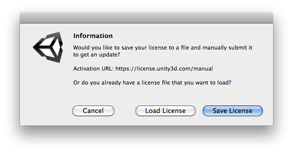

Step-by-Step Guide to Manual Activation of Unity 4.0
With the new Licensing System, the Editor will automatically fall back to manual activation if Online Activation fails, or if you do not have an internet connection. See the steps below for an outline on how to manually Activate Unity 4.0.
Unity falls back to Manual Activation, should the Online Activation fail. However, you can manually prompt Unity to start the Manual Activation procedure by navigating to ‘Unity>Manage License…’ within the Editor.
In the ‘License Management’ window, hit the ‘Manual activation’ button.

-
You will now be faced with a dialog displaying three buttons: 
‘Cancel’ will take you back to the ‘License Management’ window.
‘Save License’ will generate you a license file specific to your machine, based on your HWID. This file can be saved in any location on your physical machine.
‘Load License’ will load the activation file generated by the Manual Activation process.
You will need to generate a license file; in order to do this, click the Save License button. Once clicked you will be faced with the window ‘Save license information for offline activation’. Here you can select a directory on your machine to save the file.
Once saved, you will receive a message stating that ‘License file saved successfully’. Click ‘Ok’ to proceed.
Now minimise the Editor and navigate to https://license.unity3d.com/manual within your Browser (if on a machine without an internet connection, you will need to copy the file to a machine that does and proceed there).
Navigate to the file you generated in Step 4 and upload it in the appropriate field. When your file has been selected, click ‘OK’ to proceed.
Nearly done! You should have received a file in return, as with Step 4, save this to your machine in a directory of your choice.
Move back into Unity and select the ‘Load License’ button. Again, this will open up your directories within your hard drive. Select the file that you just saved via the Web form and click ‘OK’.
You have now completed the Manual Activation process.
For any further assistance, contact support@unity3d.com.